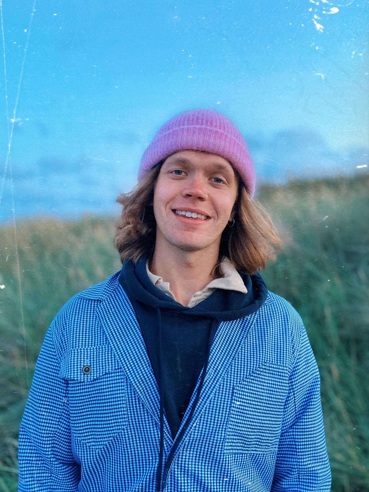

About me
I'm a 27 year old, native Canadian living in the Netherlands for the past 5 years. I have done my BSc in Psychology at the VU Amsterdam and finished my MSc in Clinical Psychology at Erasmus University Rotterdam.
I have worked as a therapist/counselor in Cape Town, South Africa which exposed me to working with diverse groups of people. I have finished my Master's thesis on mindfulness practice and its effects on students in regards to burnout and fatigue and also am on the track to becoming a licensed mindfulness trainer. However, I am also trained in motivational interviewing, ACT, and CBT with a constant drive to keep learning.
I know how hard it is to find a young, relatable therapist especially in times when one is really needed.
I strive to be the therapist that makes you feel the most comfortable and also the one that can help in a way that best works for you.

Qualifications and experience
I have worked as a therapist/counselor in Cape Town, South Africa which exposed me to working with diverse groups of people. I have finished my Master's thesis on mindfulness practice and its effects on students in regards to burnout and fatigue and also am on the track to becoming a licensed mindfulness trainer. However, I am also trained in motivational interviewing, ACT, and CBT with a constant drive to keep learning. I know how hard it is to find a young, relatable therapist especially in times when one is really needed.
I strive to be the therapist that makes you feel the most comfortable and also the one that can help in a way that best works for you.